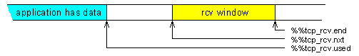
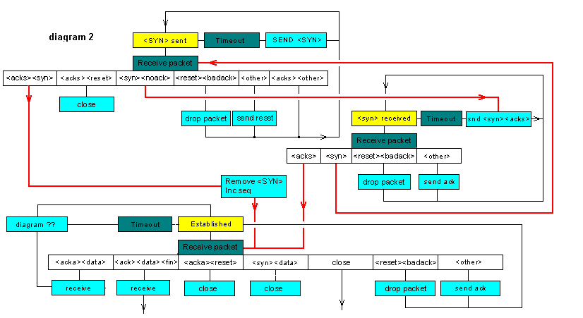

A user opens a tcp_client or tcp_server to use the tcp protocol.
io_protocol_common class
Tcp timer values in ticks ( 10 msec increments)
cell% instance_variable %%received_peps
cell% instance_variable %%received_processed
cell% instance_variable %%rcvd_state
cell% instance_variable %%last_received_pep
cell% instance_variable %%unacceptable_ack
cell% instance_variable %%pck_out_of_window
cell% instance_variable %%pck_no_ack
| #50 CONSTANT #rexmt_default_value
| #5 CONSTANT #tcp_ack_delay
\ this is two minutes; seems very long, but that is the standard.
| #1sec #120 * CONSTANT #time_wait_delay
These we set to whatever we like. This system does not allocate buffers of this size. These determine what we advertize, and how much data we will queue. The data is left in peps until it is presented to the task consuming it. The I/O routines or the task sending the data converts it to peps before we see it. When we send data we copy a pep and send it on it's way. We do not repackage data if other end partly receives a pep. If your communicating with systems that have very small data buffers this will effect performance. This TCP stack is written for embedded systems. Technology being what it is today has made TCP a viable option. In my view it is more important to get good performance in systems with large buffer space. Things have been done to minimise computation and data movement.
| 8000 CONSTANT #rcv_data_buffer
| 8000 CONSTANT #snd_data_buffer
If we don't get a responce after this many tries, abort the connection
| #8 CONSTANT #abort_retries
If the timeout gets above 20 seconds it really is pretty much a waste of time. If this TCP stack ends up on a Mars probe, yes it is too short. Chances of that happening, zero.
| #100 #20 * CONSTANT #max_timeout
Rfc879 page 5, and see RFC 1122 section 4.2.2.6. This is the internets default tcp data size. To get the default tcp datagram size you have to add the tcp header size and ip header size.
| #536 CONSTANT #default_mss
The inital sequence number is to be based on a clock that increments every 4 microsecs. There are 10000 microsecs to a tick. so there are
| #10000 4 / CONSTANT _#tcp_ticks>ticks
The number of packets that can be placed in each of the transmit queues.
| $40 CONSTANT _#transmit_queue_size
The send queus are implemented as single list net queues. Because of the way the code is written they have to be single lists. If makes no sense to make them anything else. We use net queues as we want to limit the number of packets that can be queued, a simple queue doesn't support that function.
| 1 CONSTANT _#transmit_queue_priorities
The server can create clients the clients thus created are link through here.
double% instance_variable %%server_link
We need to talk about this a bit. When we receive a datagram from the remote machine we do not generate a direct reply. This is not an ack nack protocol. When we receive we update the data areas to reflect what has been recieved, and schedule a transmit. If something else has scheduled a transmit earlier then so be it. The tranmit routine will create a packet based on the current receive state.
This links together objects that the transmit task must look at. Each open tcp link is represented by an object. If an object ins't linked into this list there is no transmit scheduled. The list is maintained in timeout order. The transmit task only deal with the list until it finds objects that havn't timed out.
double% instance_variable %%transmit_link
When this object wants the transmits to occure.
cell% instance_variable %%transmit_time
Set to true if object is in transmit_list
cell% instance_variable %%transmit_in_list
%%local_machine and %%remote_machine are defined in io_protocol_common.
cell% instance_variable %%remote_port
cell% instance_variable %%local_port
The address of the table created when this io object was added to the demux routine. We don't own it, but we need it's address for the close.
cell% instance_variable %%demux_structure
If you get a count here there is an error in this code.
cell% instance_variable %%tcp_state_error
cell% instance_variable %%read_error
How long before we retransmit in ticks
cell% instance_variable %%tcp_rexmt
cell% instance_variable %%tcp_rtt
cell% instance_variable %%tcp_rtt_smooth
cell% instance_variable %%tcp_rtt_dev
The tcb state; see rfc 793.
cell% instance_variable %%tcp_state
Packets unsent don't have to be dealt with when looking to see if packets have been acked. And unsent packets don't have to be timed out.
If things go as planned the :write_protocol word places the pep into the unsent list. The transmit task takes it out of the unsent list, sends it and places it in the sent list. The proto task accepts incoming datagrams. The incoming datagrams ack data sent. The ack operation results in packets in the sent list being taken out and returned to the free buffer pool.
The other end advertises a maximum window size. This is nice, but only places a limit on what is inflight.
We limit the number of peps that can be queued for transmission. This is done to protect ourselves from excessive data generation.
#queue_list_length
_#transmit_queue_priorities *
#queue_data_length + bytes% instance_variable %%tcp_queue_unsent
The amount of data sent should only be limited by the receiving window and available data.
#simple_queue_length bytes% instance_variable %%tcp_queue_sent
Received peps are linked in here in sequence number order. There can still be gaps
cell% instance_variable %%pre_receive_list
peps in this list reflect the received data only once; and the data is complete. The pointers in the headers are adjusted to skip data that is doubled.
#simple_queue_length bytes% instance_variable %%final_receive_queue
The variable is descremented as data added to the pre receive list incremented as data is removed. When it decrements to zero things are about full. Packets that contain the current rcv.nxt sequence number can always get added.
cell% instance_variable %%pre_receive_list_room
Same for final list.
cell% instance_variable %%final_receive_queue_room
The seqence number of incoming datagram effects these areas.
When sending a datagram we use these areas to supply the window and ack value. The ack value reflects the current value of rcv.nxt
Above is now wrong rcv.used has gone
Next seqence to be received. Sequence numbers equal or greater than this have not been received. Sequence numbers less have been received. The syn segment received from the remote machine sets the initial value.
Remember the syn flag occupies one byte of the segment space, as does the fin flag.
cell% instance_variable %%tcp_rcv.nxt
This is the end we are allowed to advertise up to. There should be a "we have advertised up to variable" as well. As the "can advertise" and "have advertise" occure at different times. Some of the data sent by the other end has to be within the advertised window to be accepted. We use the value contained in this variable, very little is gained by being pedantic. We will accept data past the window as long as the datagram contains some data within the window.
cell% instance_variable %%tcp_rcv.end
cell% instance_variable %%tcp_rcv.iss

Initial send sequence; set on open.
cell% instance_variable %%tcp_snd.is
The highest value ack I have received from other end. Remember this is equal to data seen by other end plus one. Or to put it another way, the sequence number of the packet seen by the other end plus the amount of data contained in the packet.
cell% instance_variable %%tcp_snd.una
The highest sequence I have sent.plus one, or the first unsent sequence depending on you point of view. Data with sequence numbers less than this will be on the sent queue, data with sequence numbers higher or equal will be on the unsent queue. I get a bit upset if other ends start acking unsent data.
cell% instance_variable %%tcp_snd.nxt
The ack and window received in the incoming packet has a big effect on these. The last sequence plus one that we may send. This is equal to the ack + ack_window received in the incoming data.
cell% instance_variable %%tcp_snd.end
The seqence used to queue data
cell% instance_variable %%tcp_snd.queue
Congestion window. The end.seq is set by the remote end. Each packet contains a window and this along with the ack value is used to set seq.end
The congestion window is controlled by us. If packets sent arn't acked we conclude the losses were caused by congestion and reduce the congestion window.
cell% instance_variable %%tcp_snd.congestion.wnd
%%tcp_snd_mss is set to default in construct, and if not told otherwise it is limited to the tcp default. %%tcp_snd_mss can be updated by an option in the tcp header received form other end.
cell% instance_variable %%tcp_snd.mss
The receive segment size is sent by us as an option in the syn message We determine the rcv.mss on object create. It is not altered thereafter. If we are sending to something behind a gateway we set it to a value equal to the tcp default. If we are talking to something on the same network segment we set a value based on the interface's maximum transfer unit
cell% instance_variable %%tcp_rcv.mss
A variable set in the proto task and reset in the transmit task. The proto task sets the variable if an ack is required. The transmit task resets it when a ack has been sent.
cell% instance_variable %%tcp_send_ack
Type data is collected directley into the data area of a pep. The base address of the pep has to be kept for transmission.
cell% instance_variable %%type_pep
cell% instance_variable %%previous_character
When communication is started the inital seqence number has to be dependent on a clock.
#BVP6552 #BVP6551 + [IF]
: initial_sequence ( -- num )
@ticks _#tcp_ticks>ticks *
_lreg_SCNT0 @ _#slt0_value - \ 5474 uses a down counter.
_#tcp_ticks>ticks _#slt0_value */ +
;
[ELSE]
: initial_sequence ( -- num )
@ticks _#tcp_ticks>ticks *
_wreg_TCN1 W@ _#tcp_ticks>ticks _#trr1_value */ +
;
[THEN]
m: ( parent --)
this [parent] :construct
zero %%remote_port !
zero %%local_port !
zero %%demux_structure !
zero %%tcp_state_error !
\ the timeout variables; we pretend we have had very
\ stable transmission at the set timeout.
#rexmt_default_value %%tcp_rexmt !
#rexmt_default_value %%tcp_rtt !
#rexmt_default_value %%tcp_rtt_smooth !
zero %%tcp_rtt_dev !
#tcps_closed %%tcp_state !
%%tcp_queue_sent reset_simple_queue
_#transmit_queue_size
_#transmit_queue_priorities
%%tcp_queue_unsent queue_init
\ %%transmit_link doesn't have to be initialised
\ %%transmit_time doesn't have to be initalised
FALSE %%transmit_in_list !
zero %%pre_receive_list !
%%final_receive_queue reset_simple_queue
#rcv_data_buffer %%pre_receive_list_room !
#rcv_data_buffer %%final_receive_queue_room !
\ when we receive the remote syn this will be set
\ to valid value
zero %%tcp_rcv.nxt !
#rcv_data_buffer %%tcp_rcv.end !
\ %%tcp_snd.end doesn't have to be initialised
initial_sequence
DUP %%tcp_snd.is !
\ the sync has not been acknowledged.
DUP %%tcp_snd.una !
\ skip the SYN value, it will get sent because of the state.
1+
DUP %%tcp_snd.nxt !
DUP %%tcp_snd.queue !
\ we have received no reply, the window needs to be large enough
\ to send the syn and that is it
%%tcp_snd.end !
\ we start up assumeing link congestion
#default_mss %%tcp_snd.congestion.wnd !
\ hopefully the incoming syn value will contain an option that
\ will set this.
#default_mss %%tcp_snd.mss !
#default_mss %%type_buffer_size !
\ we set this and tell other end about it when we send the SYN
#default_mss %%tcp_rcv.mss !
\ don't need to start with an ack
FALSE %%tcp_send_ack !
0 %%received_peps !
0 %%received_processed !
0 %%previous_character !
; overrides :construct
The transmit list is a linked list of io objects. They are linked in timeout order.
The receive routine doesn't even try and guess what the transmit routine should send. The receive routine, the proto task calls method in this object to consume the received datagram. The methods update the data area and schedules transmit events. The transmit routines determine what is to be sent.
The client task ( the task using the TCP object) queues packets for transmission by the transmission task, and schedules the transmission task.
tcp objects that want the tranmission task to look at them link themseleves into the following list.
ram_variable %tcp_transmit_head
tcp_transmit can only be used within methods. The transmit task is executed every time the tcp level is run, so it has to be pretty efficiant. The list is kept in time sorted order. If the first item has timed out it is removed from the list and the :transmit_action method is executed. :transmit_action may place the object back in the list. When the :trasmit method is finished the transmit task looks at the list again and sees if the top entry has timed out.
The tcp_transmit_task is ran before the routeing task so messages can be on the wire after one pass through the tcp level.
tcp_transmit takes a time. If you set time to xclock+ @ the tcp level will be scheduled directly, and the entry will timeout, this is used for data transmits. If you set time to xclock+ @ 1+ a reschedule will not occure, but the entry will timeout on the next clock interrupt. Ack should be rescheduled in this way. In fact it is probable better to add 5, we allow a pretty big window, and allow 50 msec before a ack is sent. This gives things time to consume data allowing the sending of a ack that better reflect the current window size.
5 is picked as follows
10 Mbits approximatly 1 Mbyte. 1/20 sec = 50k bytes, this will fit in a 64k window. To be working at this speed we are talking on the local net. So responce will be seen almost directly.
On a slow link the delay means very little.
Objects can be added to the transmit list at any level.
Word executed to schedule a transmit event.
\ CE 29 Aug 2001 checked
: tcp_transmit ( time --)
_lock_word
BEGIN
%%transmit_in_list @ IF
\ if greater
DUP %%transmit_time @ - 0> IF
\ new time is greater than old; transmit is scheduled
\ sooner than new request so drop this one. If you delay acks
\ by 5, first ack will get scheduled, the rest ( until the ack is
\ sent) will pass through here.
DROP
_unlock_word
EXIT
THEN
\ this will unlock. We have to unlink as the
\ list has to be linked in timeout order and we are
\ about to change the timeout value.
FALSE %%transmit_in_list !
%%transmit_link unlink_double
\ There is a risk that a higher priority task will
\ link in after we unlink and before we get the
\ lock back on, if this happens we just have to
\ go around again.
_lock_word
THEN
%%transmit_in_list @ not
UNTIL
\ time(--
\ The lock should be on here
\ with the object not linked into the transmit list
DUP %%transmit_time !
TRUE %%transmit_in_list !
%tcp_transmit_head
BEGIN
\ time link(--
DUP @
\ time link link_next(--
WHILE
\ time link(--
2DUP
\ time link time link(--
@ [ %%transmit_time %%transmit_link - ]T LITERAL + @
\ time link time_new time_old(--
- 0< IF \ >
\ next entry is furthur in time so link one back
\ this word will unlock
%%transmit_link SWAP link_double
\ time(--
xclock- @ + 0< IF \ >
\ work is to be done now. This word causes a trap. If we are on
\ the lowest level the priority will now be raised and tcp
\ trasmit and route will do there thing. If we are running
\ at a high priority this will do no more than schedule the
\ tcp level for a run when priorities fall.
run_tcp
THEN
EXIT
THEN
@ \ next entry
REPEAT
\ time link(--
\ come to end of list
%%transmit_link SWAP link_double
xclock- @ + 0< IF \ >
run_tcp
THEN
;
: _setup_tcp_packet { ( seq rcv.wnd rcv.nxt ) variable %flags variable %pep -- }
%%local_machine @ %%remote_machine @
zero ( ip_option_length) %pep @
\ seq rcv.wnd rcv.nxt source destination ip_option_count pep(--
setup_ip
\ the priority and tos is set to zero. This determines
\ how %%priority is used. It contains the data encoded as required
\ for a direct store into the tcp packet.
%%priority @ %pep @ [ ep_data ip_tos + ]T LITERAL + B!
\ seq rcv.wnd rcv.nxt(--
\ set tcp protocol
IPT_TCP %pep @ [ ep_data ip_proto + ]T LITERAL + B!
#tcp_header_end %pep @ add_to_ip
%pep @ ep_ipdata + @
\ snd.una rcv.wnd rcv.nxt ip_data(--
%%local_port @ OVER #tcp_src + W!
%%remote_port @ OVER #tcp_dst + W!
SWAP OVER #tcp_ack + !
\ seq rcv.wnd ip_data(--
SWAP OVER #tcp_window + W!
\ seq ip_data(--
SWAP OVER #tcp_seq + !
\ ip_data(--
[ #tcp_header_end 2 RSHIFT ( to 32 bit words)
4 LSHIFT ( top 4 bits ) ]T LITERAL
OVER #tcp_offset + B!
\ ip_data(--
%flags @ OVER #tcp_flags + B!
\ ip_data(--
zero OVER #tcp_urgptr + W!
\ ip_data(--
DUP #tcp_header_end + %pep @ ep_protodata + !
zero %pep @ ep_protocount + !
\ the protocol object for checksum latter in the datgrams life.
_%tcp_object @ %pep @ ep_proto_obj + !
\ ipdata(--
DROP
;
We call this if we want to add the mss to a packet. it is usable with a pep that contains data. The pep has to be long enough to allow us to insert the 4 bytes. If data is present we do have to move it to insert the option. In this implementaton we only send the mss in the syn segment and we do not send data in the syn segment.
\ 29 Aug 2001 CE checked
: _set_tcp_option { variable %pep -- }{
2 CONSTANT #mss_option_code
\ describe the mss option
0
DUP CONSTANT _#code 1+
DUP CONSTANT _#len 1+
DUP CONSTANT _#data 2+
DUP CONSTANT _#opt_length DROP
#tcp_header_end 4 + 2 RSHIFT ( to 32 bit words)
4 LSHIFT ( top 4 bits ) CONSTANT _#header_length
}
\ add_to_ip does not alter the protocol counts and nor should it,
\ there are a lot of reasons for adding to the datagram that have
\ nothing to do with the protocol
_#opt_length %pep @ add_to_ip
%pep @ ep_protodata + @ DUP _#opt_length + %pep @ ep_protocount + @ MOVE
\ (--
_#opt_length %pep @ ep_protodata + +!
%pep @ ep_ipdata + @
\ ipdata(--
_#header_length OVER #tcp_offset + B!
\ write the option data
#mss_option_code OVER #tcp_header_end + _#code + B!
_#opt_length OVER #tcp_header_end + _#len + B!
%%tcp_rcv.mss @ SWAP #tcp_header_end + _#data + W!
;
We create the pep and queue it as an ip.
\ 29 Aug 2001 CE checked.
: _send_empty_segment { ( seq rcv.wnd rcv.nxt ) variable %flags -- }{
variable %pep
\ describe the mss option
0
DUP CONSTANT _#code 1+
DUP CONSTANT _#len 1+
DUP CONSTANT _#data 2+
DUP CONSTANT _#opt_length DROP
}
zero %flags @ #tcpf_syn AND IF
\ if a syn packet we have to leave room for an option.
_#opt_length +
THEN
[ ep_data ip_options #tcp_header_end + + ]T LITERAL +
['] get_free_buffer CATCH IF
\ snd.nxt rcv.wnd rcv.nxt length(--
2DROP 2DROP
EXIT
THEN
[ last_definition ]T LITERAL OVER buffer_save_ip
%pep !
\ snd.nxt rcv.wnd rcv.nxt(--
%flags @ %pep @ _setup_tcp_packet
%flags @ #tcpf_syn AND IF
%pep @ _set_tcp_option
THEN
%pep @ queue_ip
;
\ if we send a packet out of sequence we should get an ack from the
\ other end. The other end should discard the packet.
\ 29 Aug 2001 CE checked
: _get_responce ( --)
%%tcp_snd.una @ 1 - \ get a segence number that is out of the window.
\ receive window
%%tcp_rcv.end @ %%tcp_rcv.nxt @ -
zero MAX
\ where I have receive to.
%%tcp_rcv.nxt @ \ the highest consistant sequence I have received.
#tcpf_ack _send_empty_segment
;
\ 29 Aug 2001 CE checked
: _send_an_ack ( --)
%%tcp_snd.nxt @ \ next seq to send
%%tcp_rcv.end @ %%tcp_rcv.nxt @ - \ window
\ We will accept past end and it can happen
\ if the sending stack sends the complete segment on spec.
zero MAX
%%tcp_rcv.nxt @ \ the highest consistant sequence I have received.
#tcpf_ack _send_empty_segment
;
: _return_transmit_queues ( --)
BEGIN
%%tcp_queue_sent simple_empty? not
\ flag(--
WHILE
%%tcp_queue_sent simple_data
\ addr(--
%%tcp_queue_sent simple_deq
kill_free_buffer
REPEAT
BEGIN
%%tcp_queue_unsent dequeue ?DUP
WHILE
kill_free_buffer
REPEAT
;
: _return_receive_list ( --)
BEGIN
_lock_word
%%pre_receive_list @ ?DUP
WHILE
\ this will unlock
DUP unlink_double
kill_free_buffer
REPEAT
_unlock_word
BEGIN
%%final_receive_queue simple_empty? not
WHILE
%%final_receive_queue simple_data
%%final_receive_queue simple_deq
kill_free_buffer
REPEAT
;
The time wait state is looked after by tcp_demux. This word sets things up
: _setup_time_wait ( time --)
\ amount of time we are to stay in the timewait state
%%demux_structure @ _#demux_live_time + !
\ the time we entered the state
xclock+ @ %%demux_structure @ _#demux_time + !
\ If we are in this state the object is zero.
0 %%demux_structure @ _#demux_object + !
;
If you close without doing a flush file; the file will be flushed and the fin flag will get set as part of last packet. It is done this way so short transactions can be done in 5 packets, with the client left in the time wait state.
SYN client SYN ACK server ACK DATA FIN cleint ACK DATA FIN server ACK client
The %%type_buffer> is set to zero when a pep is sent, and contains an address when data is in buffer waiting to be sent.
\ rewritten CE 18 Sept to use %%type_pep
: _send_fin_packet ( --)
%%type_buffer> @ IF
\ still data to be sent
%%type_pep @
ep_ipdata + @ #tcp_flags + DUP B@ #tcpf_fin OR
SWAP B! this :flush_file
ELSE
\ queue a fin packet.
[ ep_data ip_options #tcp_header_end + + ]T LITERAL get_free_buffer
DUP this :setup_protocol
\ addr(--
DUP ep_ipdata + @ #tcp_flags + DUP B@ #tcpf_fin OR SWAP B!
\ addr(--
0 0 ROT
\ addr n pep(--
this :write_protocol
THEN
;
: _get_received_packet ( --pep)
%%final_receive_queue simple_data
%%final_receive_queue simple_deq
;
\ 29 Aug 2001 CE checked
m: ( --)
\ there is a timer routine to delete TCP demux
\ entries. We have to have this because the deletion
\ of the entry has to be delayed if we send the fin first.
\ If demux structure is set to zero we are closing bacause
\ of an abort in Sopen
%%demux_structure @ IF
zero \ time to leave the finwait state open
%%tcp_state @ DUP #tcps_established =
SWAP #tcps_synrcvd = OR IF
#tcps_finwait1 %%tcp_state !
_send_fin_packet
\ we don't have to timeout the wait the normal
\ TCP timeout will do that and send us an abort message
\ and put us in the abort state
%%final_receive_queue simple_xawait
_get_received_packet
kill_free_buffer
\ we should now be in the time_wait state
#time_wait_delay +
THEN
%%tcp_state @ #tcps_closewait = IF
\ other end has sent a fin
\ we must now send our fin and wait for ack
#tcps_lastack %%tcp_state !
_send_fin_packet
%%final_receive_queue simple_xawait
_get_received_packet
kill_free_buffer
THEN
\ if we wake here we have received the ack
\ we can close directly
\ The time value is how long the demux entry should
\ servive
\ time(--
\ we should be in either #tcps_time_wait, #tcps_closed,
\ but we are not going to look
\ time(--
\ if we get here the close has finished from out point of view
\ time wait has nothing to do with this object.
_setup_time_wait
\ now no more packets will arrive from net
\ now get us out of the transmit list
_lock_word
%%transmit_in_list @ IF
%%transmit_link unlink_double
THEN
_unlock_word
\ now no more packets will be sent to the net.
_return_transmit_queues
_return_receive_list
THEN
\ We have to remove the type buffer as we have a pointer that points into an
\ ip datagram; not the base of a buffer as io_common expects.
%%type_buffer> @ IF
zero %%type_buffer> !
%%type_pep @ kill_free_buffer
THEN
this [parent] :destruct
; overrides :destruct
String can be:
/destination_machine/destination_port //destination_port or nothing
The mode determines the priority and the type of service required.
\ 29 Aug 2001 CE
m: ( addr n mode -- instance )
DUP %%mode !
\ the mode contains the priority and mode as required
\ for tcp header
%%priority !
\ /machine/port
[CHAR] / remove_leading
[CHAR] / left_split
\ addr_machine count_machine addr_port count_port(--
2SWAP DUP IF \ machine specified
Sresolve_address %%remote_machine !
ELSE
2DROP
THEN
\ addr_port count_port(--
[CHAR] / remove_leading
DUP IF \ port speced
Snumber %%remote_port !
ELSE
2DROP
THEN
\ ask the os for a demux entry, this also provides a local port
\ as soon as we do this we can start receiving
\ datagrams destined to the allocated port.
\ As no one knows about us it is not likely, but it
\ is possible.
\ This adds to the udp demux table.
\ We are a client, we care about detination machine and port
this
%%remote_machine @ -1
%%remote_port @ -1
_tcp_port %%demux_structure !
%%demux_structure @ _#demux_local_port + @ %%local_port !
\ find out if remote machine on local net;
%%remote_machine @
\ CE 29 december 2000 @ missing.
%%priority @ $1C AND 2 RSHIFT
route_get ?DUP IF
\ The standard calls for this. Needed if multiple interfaces can get you the
\ desired result.
DUP rt_interface + @ :ip @ %%local_machine !
\ The rules are. Make the receive mss as big as you can
\ and tell the other end when you send the sync. The send
\ mss is the default value unless the other end tells us
\ otherwise. The mss depend not only on the connection medium
\ but also on the host being communicated with. The other end
\ may not be able to handle a mss greater than the min.
\ %%tcp_rcv.mss is set to #default_mss in construct
DUP rt_gw + @ not IF
\ we are talking locally; make mss dependent
\ on mtu. This is very important for us as the
\ rti bus has a mtu of 8k
\ see rfc879 page 5 for justification for this calculation
DUP rt_interface + @ :@mtu ip_options -
#tcp_header_end - %%tcp_rcv.mss !
THEN
route_free
THEN
#tcps_synsend %%tcp_state !
\ This adds the object to the transmit list. After this
\ things are started
\ the TCP/IP system is trying to get the SYN packet out, and will deal with
\ the ack received.
xclock+ @ tcp_transmit
this
; overrides :file_open
Back when the file objects were being written the object :construct word was split from specific actions needed to open the file, and :file_open was born. Well this came in handy. When a server creates a client it is just creating one of these objects. We need a word to do the action :file_open does based on data received. :client_init is the word.
Each syn received creates an entry as described below.
zero
| DUP CONSTANT _#listen_inuse 2+
| DUP CONSTANT _#listen_port 2+
| DUP CONSTANT _#listen_mss 2+
\ service type
| DUP CONSTANT _#listen_st 2+
| DUP CONSTANT _#listen_machine 4+
\ sequence that came in packet
| DUP CONSTANT _#listen_rcv.iss 4+
\ sequence that we sent
| DUP CONSTANT _#listen_send.iss 4+
CONSTANT _#listen_entry_size
addr points to a table contructed as above the pep points to the datagram that can move the client to the established state. We do the movement using the standard receive words because the pep can contain data and a fin flag as well as a syn and a ack of our syn and it is all to complicated to write again.
| ram_variable %tcp_server_error
CREATE _$bad_open_packet ," Bad open packet"
m: { variable %pep variable %syn_table ( -- ) }
%syn_table @ _#listen_machine + @ %%remote_machine !
%syn_table @ _#listen_port + W@ %%remote_port !
%pep @ [ ep_data ip_dst + ]T LITERAL + @ %%local_machine !
%pep @ ep_ipdata + @ #tcp_dst + W@ %%local_port !
%syn_table @ _#listen_mss + W@ %%tcp_rcv.mss !
\ I received the syn, I expect to see the seqence after the syn
%syn_table @ _#listen_rcv.iss + @
DUP %%tcp_rcv.iss !
1+
DUP %%tcp_rcv.nxt !
#rcv_data_buffer + %%tcp_rcv.end !
\ I have sent the SYN
%syn_table @ _#listen_send.iss + @
DUP %%tcp_snd.is !
DUP %%tcp_snd.una !
DUP %pep @ ep_ipdata + @ #tcp_window + W@ + %%tcp_snd.end !
1+
DUP %%tcp_snd.nxt !
%%tcp_snd.queue !
\ Set link to priority and tos requested by client.
%pep @ [ ep_data ip_tos + ]T LITERAL + B@ %%priority !
\ set the %%local_machine, it is dependent on the
\ address received in the syn datagram, not the
\ interface the reply is sent to.
\ set up the demux entry
\ we care about all values
this %%local_port @
%%remote_machine @ -1 %%remote_port @ -1
_tcp_add IF
\ we are in deep shit we can't use the client and we can't close it
\ The routine that gets the client_object will have to check that this
\ is non zero. If zero it will have to close it directly.
zero %%demux_structure !
%pep @ kill_free_buffer
EXIT
THEN
%%demux_structure !
#tcps_synrcvd %%tcp_state !
\ so the packet gets used twice, the server object
\ deals with the packet and creates a client object
\ the client object is put into the state in which
\ this packet is expected and it uses the packet again.
\ If you look at the client code it can deal with stange
\ combinations of ack data and fin,
%pep @ this :consume_port
%%tcp_state @ #tcps_synrcvd @ > not IF
\ if the state is not above #tcps_synrcvd then
\ we have to close the link down again.
\ This should not happen!
1 %tcp_server_error +!
_$bad_open_packet ep_data get_free_buffer this :abort_connection
THEN
\ well that is it folks.
; overrides :client_init
: _add_to_tcp ( n pep -- )
2DUP add_to_ip
ep_protocount + +!
;
\
\ 29 Aug 2001 CE checked
m: { variable %pep -- }
\ not a valid ack unless
\ the ack and window fields are updated
%%tcp_snd.queue @ 0 0 #tcpf_ack %pep @ _setup_tcp_packet
; overrides :setup_protocol
\ not a valid option
m: ( %pep_in %pep_out -- )
TRUE ABORT" Not a valid option"
; overrides :setup_protocol_from_pep
The big qestion; should We close on an abort or leave it to the user. The rule is if you take one of these words you can convert it into a ior type result with a simple catch. That means you don't close
\ rewritten 18 sept 2001 to use a table of values instead of IF statments
\ you send a fin after closing; so no use trying in FIN_WAIT_1
\ We have to receive all packets in CLOSE_WAIT.
\ An aggressive sender can send data in the SYN_SENT and
\ SYN_RCVD state.
\
| CREATE _bad_receive_table
TRUE t, \ #tcps_closed \ 0
FALSE t, \ #tcps_abort \ 4
TRUE t, \ #tcps_listen \ 8
FALSE t, \ #tcps_synsend \ 0C
FALSE t, \ #tcps_synrcvd \ 10
FALSE t, \ #tcps_established \ 14
TRUE t, \ #tcps_finwait1 \ 18
TRUE t, \ #tcps_finwait2 \ 1C
FALSE t, \ #tcps_closewait \ 20
TRUE t, \ #tcps_lastack \ 24
TRUE t, \ #tcps_closing \ 28
TRUE t, \ #tcps_timewait \ 32
TRUE t, \ #tcps_error \ 36
: _bad_receive_state? ( -- flag )
%%tcp_state @ _bad_receive_table + @
;
\ the room in the final list effects the window.
\ Room in the pre list simple determines how many out of order packets
\ we will receive. The pre list belongs to the protocol. It allows us to
\ deal with out of order and duplicate reception; that is all.
\
\ The idea is; if the current receive position and the room left in the final queue
\ is greater than the current end position plus the room needed to receive a message then
\ move the end. This gets executed as data is removed from the receive queue so it has
\ to be workable from different tasks priorities.
\ 18 Sept Checked CE
: _update_rcv_window ( --)
_lock_word
%%tcp_rcv.nxt @ %%final_receive_queue_room @ + DUP
%%tcp_rcv.end @ %%tcp_rcv.mss @ +
- 0> IF
%%tcp_rcv.end !
ELSE
DROP
THEN
_unlock_word
;
\ I don't care what anyone says; this turned out really neat.
\ 29 Aug 2001 CE checked
m: { ( --pep addr n ) }{ variable %pep }
\ the protocol has many states from which you can't receive data
_bad_receive_state? IF
0 0 0
EXIT
THEN
\ if we want to timeout the reception we have to wait for a
\ packet using a different method.
%%timeout @ not IF
%%final_receive_queue simple_xawait
ELSE
%%timeout @ %%final_receive_queue simple_xawait?
xtimeout? IF
0 0 0
EXIT
THEN
THEN
\ if we get to here there is a pep queued to be used
\ as we please.
_get_received_packet
\ pep(--
\ we have to do this first as system queues peps
\ that have nothing more than an ep_error value
DUP ep_error + @ IF
%%tcp_state @ #tcps_abort = IF
panic" tcp connection aborting : "
\ ICMP messages ????? make sure they get to here
DUP ep_error + @ COUNT panic
THEN
kill_free_buffer
0 0 0
EXIT
THEN
\ we have to increase %%final_receving_queue_room, if the available
\ room is now bigger than mss we send an ack to tell the other end
\ the window is now open, a winder advertisment.
%%final_receive_queue_room @
\ pep old (--
_lock_word
\ add because removal adds to the data that cn be received to the queue
OVER ep_protocount + @ %%final_receive_queue_room +!
_unlock_word
_update_rcv_window
\ pep old(--
%%tcp_rcv.mss @ < IF \ >
\ window was closed may open
%%final_receive_queue_room @ %%tcp_rcv.mss @ < not IF \ >
\ window can now be opened.
\ should we send ack directly or should we queue.
\ If we queue............
\ If data is being sent in the
\ other direction then this will only alter the time.
\ If the link is quite then it is an additional overhead.
\ TRUE %%tcp_send_ack !
\ xclock+ @ tcp_transmit
\ If we ack directly.............
\ The software load is less. If data is being sent then it
\ is an extra packet. I don't know, neither is the better choice.
_send_an_ack
THEN
THEN
DUP ep_protodata + @
OVER ep_protocount + @
; overrides :read_protocol
\ 29 Aug 2001 CE checked
: _read_active ( --)
%%active_pep @ ?DUP IF
0 %%active_pep !
kill_free_buffer
THEN
this :read_protocol
%%active_count !
%%active_pointer !
%%active_pep !
;
As we read in data we increase addr and decrease num. Our aim here is speed. This only gets the data from the active pep.
Flag is false if all is ok, true if more read is required. If fin flag is set flag will be false and count will be non zero.
\ 30 Aug 2001 rewritten
\ Transfers data out of current pep into buffer.
\ flag is set if fin flag is set in head
: _read_binary_stream ( addr1 num1 -- addr2 num2 flag)
\ if the count is zero check for a fin
\ addr1 num1(--
DUP %%active_count @ MIN
\ addr1 num1 actual(--
TUCK -
\ addr1 actual left(--
>R
\ the data request can be satisfied with data from the active_pep
2DUP %%active_pointer @ -rot MOVE
\ addr actual (--
DUP NEGATE %%active_count +!
DUP %%active_pointer +!
+ R>
%%active_pep @
ep_ipdata + @ #tcp_flags + B@ #tcpf_fin AND 0= not
;
\ if len is zero connection is finished
\ 30 Aug 2001 CE Rewritten
: _read_tcp { ( addr len -- n) }{
variable %len }
\ as we get data the len goes down, we save off
\ inital value so we can calculate n
DUP %len !
BEGIN
\ addr len(--
_read_binary_stream
\ addr len flag(--
\ if flag is true stream is finished
IF
NIP
%len @ SWAP -
EXIT
THEN
_bad_receive_state? IF
NIP
%len @ SWAP -
EXIT
THEN
\ else num should be zero
DUP not IF
\ add zero(--
2DROP %len @
EXIT
THEN
\ get a new pep
_read_active
%%active_pep @ not IF
\ timeout was set and we timed out
\ or the connection has clossed
\ addr len(--
NIP
%len @ SWAP -
EXIT
THEN
AGAIN
;
\ If len comes up short stream is finishing.
\ The application should read until the len is zero.
\ 30 AUg 2001 CE rewritten, on finish flag an
\ abort no longer occures.
m: ( addr len -- len)
_read_tcp
\ len (--
; overrides :read
\ 29 Aug 2001 tighter code.
: eot? ( char -- flag )
%%eot COUNT zero DO
\ char addr (--
2DUP char@ = IF
2DROP
TRUE
UNLOOP
EXIT
THEN
1 CHARS +
LOOP \ char addr(--
2DROP
FALSE
;
A termination code has to be stored at the end of the input. Num2 will never equal num1. This differs from ANSI forth, if we followed the standard the user would have to make the buffer 1 ( the standard requires two) characters longer that num1. I think that is absolute nonsence designed to cause programming bugs.
Different files store the record terminator in different ways. This code converts it all to #cr
\ xxcrlfxx = xxlfcrxx = xxcrxx = xxlfxx --> xxcrxx
\ 30 Aug 2001 CE complete rewrite.
: _store_a_char ( addr num char --addr num)
%%previous_character @
OVER %%previous_character !
\ addr num new old(--
DUP #lf = IF
OVER #cr = IF
2DROP
EXIT
THEN
THEN
DUP #cr = IF
OVER #lf = IF
2DROP
EXIT
THEN
THEN
DROP
\ if new is #lf make it a #cr
DUP #lf = IF
DROP #cr
THEN
\ addr n char(--
jump char!
SWAP
1 CHARS +
SWAP
1 -
;
\ 30 AUg 2001 CE rewritten
: _get_data { ( -- term true | char false) }{
variable %buffer }
%buffer 1 _read_tcp
\ 0 = end of stream; 1 = read character
IF
%buffer char@ FALSE
ELSE
#end_eof TRUE
THEN
;
: _read_terminal_stream { ( addr1 num1 -- addr2 num2 ) }
BEGIN
\ addr1 num(--
\ if the count is one of the termination count
\ we cannot use it, we have to leave room for the
\ terminator that indicates we ran out of room.
\ addr num(--
_get_data IF
\ a terminator
_store_a_char
EXIT
THEN
\ addr num char(--
DUP eot?
IF
\ addr num char(--
_store_a_char
\ addr num (--
EXIT
THEN
\ addr num char(--
_store_a_char
\ leave room for terminator
DUP 2 < IF \ >
\ addr num (--
DUP IF
#end_count _store_a_char
THEN
EXIT
THEN
AGAIN
;
\ flag is false if eof.
m: { ( addr len -- len flag) }{
variable %len
variable %addr }
\ zero is a problem as we need room to store the terminator
DUP not IF
2DROP zero TRUE
THEN
DUP %len !
OVER %addr !
\ addr len(--
_read_terminal_stream
\ addr1 len1(--
NIP %addr @ SWAP
\ addr len1(--
%len @ SWAP -
\ addr len3(--
this :termination>code
\ len4 flag(--
; overrides :read_line
\ flag is false if eof
m: ( addr num --num flag)
2DUP 1- + char@
\ driver specific
#end_eof = IF
NIP 1- FALSE
EXIT
THEN
\ addr num --num flag
this %%terminal @ ::termination>code
; overrides :termination>code
Write the data pointed to by addr and n to the pep and queue. Queued data is only sent from four states.
SYN-SENT SYN-RECEIVED ESTABLISHED and CLOSE-WAIT
If you queue in other states the queue will become full and you will sleep forever. It is probable best to abort if we are not in a valid state.
\ 18 sept 2001, changed to table.
| CREATE _bad_send_table
TRUE t, \ #tcps_closed \ 0
TRUE t, \ #tcps_abort \ 4
TRUE t, \ #tcps_listen \ 8
FALSE t, \ #tcps_synsend \ 0C
FALSE t, \ #tcps_synrcvd \ 10
FALSE t, \ #tcps_established \ 14
FALSE t, \ #tcps_finwait1 \ 18
TRUE t, \ #tcps_finwait2 \ 1C
FALSE t, \ #tcps_closewait \ 20
FALSE t, \ #tcps_lastack \ 24
TRUE t, \ #tcps_closing \ 28
TRUE t, \ #tcps_timewait \ 32
TRUE t, \ #tcps_error \ 36
: _bad_send_state? ( -- flag )
%%tcp_state @ _bad_send_table + @
;
Write the data into the pep and queue the pep for transmisison. It is assumed that the pep has been properly set up.
m: { ( addr n) variable %pep ( --) }
_bad_send_state? IF
'abort_file @ this = IF
\ be happy
%pep @ kill_free_buffer
2DROP
EXIT
ELSE
TRUE ABORT" Can't transmit data with link in this state"
THEN
THEN
\ add_to_ip can deal with zero.
\ add n (--
DUP %pep @ _add_to_tcp
\ MOVE can deal with a zero count
\ and common destination and source address
%pep @ ep_ipdata + @ #tcp_header_end + SWAP MOVE
\ we now have to get the end sequence from the pep
\ as the fin flag may be set.
%pep @ _end_sequence 1+
\ seq(--
%pep @ %%tcp_queue_unsent zero
\ address queue_head prority(--
\ this gets the data onto the queue.
enqueue_wait
\ seq (--
%%tcp_snd.queue !
\ We need to transmit directly
\ even if there is already data in the trasmit queue we may be able
\ to send the new data directly as there can be more than one packet
\ in flight.
xclock+ @ tcp_transmit
; overrides :write_protocol
Write buffered data to storage if you follow write through you will find our buffer is the pep and there is no need to transfer the data. If you look at the definition of MOVE you will see it is bright enough not to move data that has a common source and destination address.
\ 18 sept 2001 checked CE
m: \ compile time ( --xt)
\ runtime ( --)
%%type_buffer> @ ?DUP IF
zero %%type_buffer> !
\ addr(--
%%type_buffer_count @ %%type_pep @ this :write_protocol
zero %%type_buffer_count !
THEN
; overrides :flush_file
Keep going around until count is zero, each time around we send a little more data.
\ 18 sept 2001 checked CE
: _tcp_data>type_buffer ( addr count -- true|addr count false)
%%type_buffer> @ not IF
%%type_buffer_size @
[ ep_data ip_options #tcp_header_end + + ]T LITERAL + get_free_buffer
DUP this :setup_protocol
DUP %%type_pep !
ep_ipdata + @ #tcp_header_end +
%%type_buffer> !
zero %%type_buffer_count !
THEN
\ addr count(--
%%type_buffer_size @ %%type_buffer_count @ -
\ addr num left(--
2DUP > IF ( will not all fit)
\ addr count amount_to_fit(--
\ make sure we have a type buffer
>R \ addr count (--
OVER %%type_buffer> @ %%type_buffer_count @ + R@ MOVE \ put in as much as we can
\ addr count(--
SWAP R@ + SWAP R@ - \ update send data to reflect what has been sent
\ addr_new count_new(--
R> %%type_buffer_count +!
FALSE \ tell :write to send the packet
\ and come back again
EXIT
THEN
\ data will fit in the buffer
DROP
\ character we are up to since last record ( eol ).
%%type_buffer> @ %%type_buffer_count @ + SWAP \ addr to count(--
\ update %%type_buffer_count after you have done the address calculations
DUP %%type_buffer_count +!
MOVE
TRUE
;
\ 18 Sept 2001 checked CE
m: ( addr num--)
DUP IF \ There is some data
BEGIN
\ addr n (--
_tcp_data>type_buffer IF \ return true if all ok
EXIT
THEN
\ sent the data to the device to clear the buffer
this :flush_file
AGAIN
ELSE
2DROP
THEN
; overrides :write
If the final_receive_queue has data then this should return true. The data could be a string returned fron the proto task.
m: ( --flag)
%%final_receive_queue simple_empty? not
; overrides :key?
Urgent data only has a meaning if the tcp client type assigns it a meaning. The following method is called in the proto task if the urgent bit is set.
The task does not see urgent data. It would seem the urgent data option has been so badly broken that it is not even used to interrupt the process. It's obvious use.
m: ( pep --)
DROP
; method :urgent_data
None of the RFC1323 options are handled. However this code must be able to scan across these options and ignore them.
If we return true the pep will go. Only set if the option list is badly structured
\ 18 Sept 2001 checked CE
: _tcp_fault_option ( option -- byte_after flag)
TRUE
;
\ 18 sept 2001 checked CE
: _tcp_unknown_option { ( option -- byte_after flag) }{
zero
DUP CONSTANT _#code 1+
DUP CONSTANT _#len 1+
DUP CONSTANT _#opt_head DROP
}
DUP _#len + B@
\ addr len(--
DUP _#opt_head < IF \ >
\ option count doesn't even cover header
\ we are dealing with rubbish
+ TRUE
EXIT
THEN
+
FALSE
;
The option does nothing other than take up one byte position
\ 18 sept 2001 checked CE
: _tcp_align ( addr -- addr flag )
1+ FALSE
;
\ 18 sept 2001 checked CE
: _tcp_mss { ( addr -- addr flag ) }{
0
DUP CONSTANT _#code 1+
DUP CONSTANT _#len 1+
DUP CONSTANT _#data 2+
DUP CONSTANT _#opt_length DROP
}
DUP _#len + B@ _#opt_length = IF
\ option is well constructed
DUP _#data + unalignedW@
\ It would seem there are systems that set mss to zero
\ It is a requirment that systems be able to accept the #default_mss
\ so we can simple make that the minimum
#default_mss MAX
DUP %%tcp_snd.mss !
\ set the type buffer size to the mss size
%%type_buffer_size !
_#opt_length + FALSE
EXIT
THEN
\ it is not well structured.
\ fail the packet
DUP _#len + B@ + TRUE
;
\ 18 sept 2001 checked CE
CREATE _tcp_option_vectors
$04 tw, \ number of entries
' _tcp_fault_option t, \ 0 does not get processed here, just something to put in table
' _tcp_align t, \ 1 align
' _tcp_mss t, \ maximum segment size.
' _tcp_unknown_option t, \ this and higher options are not supported
The option field is a byte.
\ 18 sept 2001 checked CE
: _tcp_process_an_option ( addr_opt -- addr_after flag )
DUP B@ _tcp_option_vectors vector
;
Unknown options are simply ignored. Flag is true if fault
\ 18 sept 2001 changed slightly; bad structure came out as good.
: _process_tcp_options { variable %pep -- ( flag ) }{
variable %options_end
}
\ this is the common route , no options
\ do as little as possible.
%pep @ ep_protodata + @
%pep @ ep_ipdata + @ -
#tcp_header_end = IF
FALSE
EXIT
THEN
\ if we get here we have options
%pep @ ep_protodata + @ %options_end !
%pep @ ep_ipdata + @ #tcp_header_end +
\ option_pointer(--
BEGIN
\ end of option list code is a zero option
DUP B@ not IF
DROP
FALSE
EXIT
THEN
DUP %options_end @ > IF
\ if here structure of option list is rubbish
DROP
TRUE
EXIT
THEN
\ list has finished
DUP %options_end @ = IF \ >
DROP
FALSE
EXIT
THEN
( opt_addr (-- new_option_addr FLAG )
_tcp_process_an_option IF
\ bad bad option
DROP
TRUE
EXIT
THEN
AGAIN
;
We are talking about the outgoing packets seqence number here. In the beginning the send window is dependent on the ack and window received in incoming datagrams.
SEQ.NXT <= SEG.SEQ+SEG.LEN-1 and SEG.SEQ <= RCV.END
This test will transmit one packet past the end of the window. It has one super dooper big advantage. The zero window code folds into the timeout code. I can't see why it won't work, but there must be some problem as all the implementations I have looked at pretend a zero window is some special thing. We will see.
\ 18 sept checked CE
: _in_send_window { variable %pep ( -- flag ) }{
variable %send_end }
\ number of bytes unsent
\ %%tcp_snd.end is only increased by packet steps.
%%tcp_snd.end @ %%tcp_snd.nxt @ -
zero MAX
%%tcp_snd.congestion.wnd @ MIN
%%tcp_snd.nxt @ + %send_end !
\ the end is not allowed to preceed %%tcp_snd.una
\ but this is a null test as packets that meet this
\ condition are no longer in the transmit list
\ %pep @ ep_end_seq + @ %%tcp_snd.una @ - 0< IF \ >
\ DROP FALSE EXIT
\ THEN
\
\ The start is not allowed to be past %send_end
%pep @ ep_start_seq + @ %send_end @ - 0> IF
FALSE
EXIT
THEN
TRUE
;
The tranmission task only schedules a timeout if there is data to be sent.
\ 18 sept lock added
\ 19 sept rewritten to use a simple queue
\ The datagram at head of queue is the first sent.
\ %%tcp_rexmt is a timeout time determined by previous link performance.
: _schedule_timeout ( --)
%%tcp_queue_sent
_lock_word simple_data ?DUP IF
\ The timeout is dependent on the timeout time
\ of the first packet in queue.
\ pep(--
ep_tcp_xclock + @
_unlock_word
%%tcp_rexmt @
+
\ time(--
\ but we do not schedule a timeout on this tick, we have
\ to remember the round trip time can be less than 1 tick.
DUP xclock+ @ 2 + - 0< IF \ >
DROP
xclock+ @ 2 +
THEN
tcp_transmit
ELSE
_unlock_word
THEN
;
The transmit task doesn't get involved in packaging the data. TCP supports urgent data but the urgent data is part of the tcp sequence. Once you have commited the data to a particular seqence you have to stick with it, otherwise you add complications to the protocol. You would have to start asking, can I alter the seqence now? You may be tempted to say, you know the other machine is up to you have a ack to tell you. The reply tells us where the machine was up to when it sent the reply. It could now be well past what we are going to resend. What set of data will the machine use. What we sequenced first or what we are about to resequence. Nope once the data is committed to a send, it's order must remain fixed.
So we have data that has been packaged by smarter routines than us, they have added the urgent data if required. There is a further anvantage in doing it this way. Routines that want speed can put there data into peps and use lower level routines to add the transmit packets onto this list. Thus avoiding a data movement.
If the other end has moved snd.una to a point partway through a packet ( whick is likely if the other end is having buffer problems) we do not modify the packet. It would take time as not only do we have to remove the unneeded data, we ould have to update the urgent pointer. Special condition tests take time and introduce bugs, best not to do it.
The flag field is used to set the tcp headers flag field. If the syn bit is set the option field is included.
A lot of things just happen.
Data exist in the list from snd.una to whatever has been
queued by the task. If the task is waiting for queue space,
the code that removes the data from the queue will
wake the task when such an action happens. The first non
ack doubles the timeout and retransmits the guilty packet.
The congestion window is also reduced.
However if the limit is the amount
of data available for transmission, this has little effect.
More time has to pass before other packets are trasmitted.
\ 18 sep 2001 checked CE, noted it can return zero
\ This word is not allowed to exit to multitasker
: _clone_datagram { variable %pep ( -- pep2|0) }{
variable %buffer
}
%pep @ ep_len + @
\ length(--
['] get_free_buffer CATCH IF
\ we can simple pretend it didn't happen
\ and things will sort themseleves out
DROP
zero
EXIT
THEN
[ last_definition ]T LITERAL OVER buffer_save_ip
%buffer !
\ copy data into transmit pep
\ (--
%pep @ %buffer @ %pep @ ep_len + @ MOVE
\ update ep_ipdata
%pep @ ep_ipdata + @ %pep @ -
%buffer @ + %buffer @ ep_ipdata + !
\ update protodata
%pep @ ep_protodata + @ %pep @ -
%buffer @ + %buffer @ ep_protodata + !
%buffer @
;
\ 18 sept 2001 CE added min of zero to window.
\ not allowed to exit to multitasker
: _tcp_send_pep_contents { variable %pep }{
variable %buffer
}
%pep @ _clone_datagram ?DUP IF
%buffer !
\ updates the ack and window. Note we don't alter the packet.
\ The flags are set when the packet is queued. This means we
\ send the syn without data. But so what
\ we are trying to write a TCP driver that
\ interoperates not push the standard to it's limit.
%buffer @ ep_ipdata + @
%%tcp_rcv.nxt @ OVER #tcp_ack + !
%%tcp_rcv.end @ %%tcp_rcv.nxt @ - zero MAX
SWAP #tcp_window + W!
%buffer @ queue_ip
THEN
;
\ not allowed to exit to multitasker
\ 18 sept 2001 checked CE
: _tcp_send_contents { variable %pep -- }
\ see comments below
xclock+ @ %pep @ ep_tcp_xclock + !
%%tcp_snd.end @ %%tcp_snd.una @ - 0> not IF
\ we are sending into a zero window.
\ If an ack is required, send only ack, as you
\ cannot piggy back data in this situation and be assured the
\ ack will get accepted. A real protocol suff up I think; but that is
\ the way it is. The problem is the rules on page 26 of RFC793.
\ If no ack is required send the data. It is nothing more than a probe
\ and it may as well be a probe that can move things forward,
\ things can change while the packet is inflight.
\
\ Remember the window open can be lost
\ so you have to probe every now and again.
\ The probe can be the next valid packet. The other end
\ will just drop it if window is still zero. As there is no
\ data to be acked, who cares.
\ I should add that this test brings little to the table. If data
\ is coming in the other direction most of the acks will be acks.
\ This probe, if it always contained data would be nothing more than
\ a lost ack occuring every now and again.
\ This is a valid state, we should not increment
\ ep_tcp_tries. However if we do this we can end up with TCP
\ connections left open forever. It would occure as follows.
\ 1) Remote machines closes window.
\ 2) Remote machine dies.
\ But that is just the way it is.
%%tcp_send_ack @ IF
EXIT
THEN
ELSE
1 %pep @ ep_tcp_tries + +!
THEN
FALSE %%tcp_send_ack !
%pep @ _tcp_send_pep_contents
;
Trace down the sent queue and send timed out packets the trace down has finished when we arrive at untimed out packet. We have a small problem, we can't simple take the packet out of the list and send, we have to clone it. We can not get away from this. TCP requires one data copy. The IP stack as written is based on two principles. 1) we don't care how the packet was generated and 2) if the code cannot deal with the packet it can destoy it. We are only allowed to destoy transmit data if the other end has acked it.
The transmit task has to be on the same priority level as the receive task.
\ this has to be do-able without locking the processor.
\ We have to worry about who is taking packets out of the sent queue ( the proto dequeue task)
\ This word takes data out of the unsent queue and put it in the sent queue.
\ Data can be put in the sent queue by anyone. This task only has to worry about head stability
\ of the unsent queue.
| CREATE _$timeout_trans ," To many transmit retries"
\ As written this is not needed, the proto task removes the sent
\ datagrams when acks for them are received from the other end.
\ The transmit tasks puts them in the sent
\ queue as required. We simple us this to generate an error if for some
\ unknown reason the assumptions made are not met.
| ram_variable %tcp_sent_facility #facility_length ram_allot
| ram_variable %tcp_sent_clash_errors
\ remember that there is a list of objects, each object has a sent queue.
\ and that they are all feeding into the _ip_queue. The routing task takes
\ packets from the _ip_queue and sends them to the correct device.
\ 19 Sept 2001 rewritten to use a simple queue for sent list.
: _try_and_send_data { ( -- ) }{
variable %queue_list
}
%tcp_sent_facility @ IF
panic" we don't have access to the %%tcp_sent_queues" panic_cr
1 %tcp_sent_clash_errors +!
THEN
%tcp_sent_facility grab
\ we retransmit all packets that have timeed out. The packets are
\ linked in initial send order.
%%tcp_queue_sent #simple_queue_head +
BEGIN
\ if the entry is zero we don't test time
\ and we finish the loop
@ DUP DUP IF
\ addr addr (--
ep_tcp_xclock + @ xclock- @ +
%%tcp_rexmt @ + 0< \ >
THEN
\ list flag(--
WHILE
\ list (--
\ if the number of reties is too great we abort the connection
DUP ep_tcp_tries + @ #abort_retries > IF
DROP
_$timeout_trans
ep_data get_free_buffer
this :abort_connection
%tcp_sent_facility release
EXIT
THEN
\ pep(--
\ remember the congestion window reduction can take what was in
\ the send window out of the window. We should take note of this.
\ If this occures data should be sent as the congestion
\ can never be reduced below one packet.
DUP _in_send_window not IF
\ there is no need to look at the unsent queue it will definitly be
\ outside the window.
DROP
%tcp_sent_facility release
EXIT
THEN
\ is the packet still in the window. Remember every packet retransmitted
\ reduces the congestion window.
\ pep(--
DUP _tcp_send_contents
\ The standard requires us to reduce the congestion window by
\ half.
\
\ list(--
%%tcp_snd.congestion.wnd @
1 RSHIFT
\ don't reduce below the maximum segment.
%%tcp_snd.mss @ MAX
%%tcp_snd.congestion.wnd !
\ and double the retransmit time
%%tcp_rexmt @ 1 LSHIFT
\ there is a maximum timeout
#max_timeout MIN
%%tcp_rexmt !
REPEAT
DROP
\ now we have to deal with unsent data.
\ The head of the queue is stable because new packets are added to end
BEGIN
%%tcp_queue_unsent
find_queue_list DUP %queue_list !
WHILE
%queue_list @ #queue_list_head + @
_in_send_window not IF
%tcp_sent_facility release
EXIT
THEN
\ (--
\ head is stable because new packets are linked at end
\ list is stable because we are using the one we found
\ above
%queue_list @ %%tcp_queue_unsent remove_queue_list
\ pep(--
\ we queue the data on the sent queue
\ the amount of data inflight is determined by the
\ window and the amount of data generated.
\ Be under no illusions a tcp stack can really pump out the data
\
\ pep(--
DUP %%tcp_queue_sent simple_enq
DUP _tcp_send_contents
ep_end_seq + @ 1+ %%tcp_snd.nxt !
REPEAT
%tcp_sent_facility release
;
Look to see if ack can be piggy backed on data. If not send empty ack packet.
\ 19 sept 2001 checked CE
: _send_data ( --)
\ if we sent something the ack is in the head
_try_and_send_data
%%tcp_send_ack @ IF
FALSE %%tcp_send_ack !
_send_an_ack
THEN
_schedule_timeout
;
This is only called if datagram is only transmitted once.
: _update_round_trip { ( time -- ) }{
\ values taken from comer volume 1 edition 3
3 CONSTANT #rtt_gain_asr
2 CONSTANT #rtt_dev_asr
3 CONSTANT #dev_gain
}
\ the round trip time is done in 10 msec inc, it can be zero
\ if less than 10 msec, just round up by 1.
1+
DUP %%tcp_rtt @ -
\ time diff(--
DUP #rtt_gain_asr >>a
%%tcp_rtt @ + %%tcp_rtt_smooth !
\ time diff(--
SWAP %%tcp_rtt !
\ diff(--
ABS %%tcp_rtt_dev @ -
#rtt_dev_asr >>a
%%tcp_rtt_dev @ +
%%tcp_rtt_dev !
%%tcp_rtt_smooth @ %%tcp_rtt_dev @ #dev_gain * +
%%tcp_rexmt !
;
Incoming data, link it into receive list.
While TCP presents itself to the application as a byte stream, at the low level this system deals in peps. :read_protocol fetches the next pep. This word deals with overlapping data, and removes urgent data from the input stream.
: _link_tcp_pep { ( link) variable %pep -- }
\ link(--
\ to be linked after this
%pep @ SWAP link_double
\ we don't include the seq and fin flag in the queue room calculations.
\ queue room is only used to protect us from attack
%pep @ ep_protocount + @ NEGATE
\ this belongs to the proto task
%%pre_receive_list_room +!
;
\ packets received get put on pre. They are transfered to final up to the first hole in the
\ data stream.
\ The output flag is true if the fin flag was found when transfering data to final.
\ checked 20/sept/2001 CE
: _pre>final { -- ( flag ) }{
variable %in_rcv.nxt
variable %fin_flag
}
%%tcp_rcv.nxt @ %in_rcv.nxt !
FALSE %fin_flag !
\ Only send an ack if rcv.nxt moves forward.
\ If it doesn't packet is out of order and ack will be wasted.
\ Fast recovery requires an ack every time a packet is received
\ out of order. We don't support it.
\ This may be the key packet and we can now move forward multiple packets
\ (--
BEGIN
%%pre_receive_list @
WHILE
\ (--
\ if the beginning of the segment is less or equal to rcv.nxt
\ then the end can become rcv.nxt. The packet has to be removed
\ from the %%pre_receive_list. If it adds to the data stream
\ it is moved to the %%final_receive_queue. The data pointers
\ in the packet are updated so the data reflects the data steam even though
\ it is still spead across multiple peps.
\ When the data is transfered to final the :urgent_data function is called.
\ The :urgent_data function see's the full data stream after reconstruction
\ with the header fields still intact.
%%pre_receive_list @ ep_start_seq + @
%%tcp_rcv.nxt @
- 0> not IF \ start is less or equal next
\ (--
%%tcp_rcv.nxt @ %%pre_receive_list @ ep_start_seq + @ - \ number to skip
DUP %%pre_receive_list @ ep_protodata + +!
\ This can give a negative result if it is there is no relevent data in the packet.
NEGATE %%pre_receive_list @ ep_protocount + +!
\ update nxt
%%pre_receive_list @ ep_end_seq + @ 1+
%%tcp_rcv.nxt @ MAX
%%tcp_rcv.nxt !
\ remove packet from pre.
%%pre_receive_list @ DUP unlink_double
\ pep(--
DUP ep_protocount + @ 0> IF
\ pep contains new data
\ urgent data is ran in the proto task so things like ^C do something.
\ It may use the urgent data pointer if it is used properly. Telnet
\ doesn't come close. The Telnet driver scans the data because the urgent data
\ pointer is so bady broken. All has to do with a spec stuff up followed by a BSD stuff
\ up. You know history.
DUP this :urgent_data
DUP ep_protocount + @ NEGATE %%final_receive_queue_room +!
DUP %%final_receive_queue simple_enq
\ On transfer to final we look at the fin flag.
\ We need to know this before the task because it is a protocol thing.
ep_ipdata + @ #tcp_flags + B@ #tcpf_fin AND IF
TRUE %fin_flag !
THEN
ELSE
\ pep(--
\ can have no data and a fin flag.
DUP ep_protocount + @ 0= IF
DUP ep_ipdata + @ #tcp_flags + B@ #tcpf_fin AND IF
TRUE %fin_flag !
THEN
THEN
\ pep(--
\ repeat of old; just get rid of the pep.
kill_free_buffer
THEN
ELSE
\ (--
\ Packet is out of sequence. The pre receive list
\ is linked in sequence number order so this
\ indicates a gap in the received packets.
\ No useful packets left in pre receive queue
_update_rcv_window
%%tcp_rcv.nxt @ %in_rcv.nxt @ <> IF
TRUE %%tcp_send_ack !
xclock+ @ #tcp_ack_delay + tcp_transmit
THEN
%fin_flag @
EXIT
THEN
REPEAT
\ (--
\ no packets left in pre receive queue
_update_rcv_window
%%tcp_rcv.nxt @ %in_rcv.nxt @ <> IF
TRUE %%tcp_send_ack !
xclock+ @ #tcp_ack_delay + tcp_transmit
THEN
%fin_flag @
;
Packet sequence is checked before entering this it is acceptable if in is greater or equal to %tcp_rcv.nxt and within our window range. We only check that the packet seqence is in the window range this means that the amount of data present can be greater than the receive window. But so what. This code will either queue the packet on the recieve_list or get rid of it.
Flag is true if fin processed. If the incoming packet contains a fin the data may not be finished. Remember packets can come out of order rcv.next has to move up to the packet befor the fin is looked at.
This code is responsible for initiating the ack. The ack is initated by setting %%tcp_send_ack and consuming the packet.
Because we are responsible for sending the ack we have to sort the packets into order.
We are allowed to queue packets past %%tcp_rcv.end. We are not allowed to ack them.
Duplicate packets will be places in the pre receie list, they will not be transfered to the receive list.
\ checked CE 19/Sept/2001
: _queue_tcp_pep { variable %pep -- }{
variable %incoming_seq
}
\ set incoming start
%pep @ ep_start_seq + @ %incoming_seq !
\ ok we have to add to data structure
\ if the %incoming end is not greater than rcv.next then it is a duplicate packet no longer
\ in window.
\ Deplicate packets are rejected by the sequence check done very early in
\ the piece.
%%pre_receive_list BEGIN
DUP @
WHILE
\ if the seq of the next packet in the list is greater then the
\ sequence of this then this is the link spot
DUP @ ep_start_seq + @
\ compare the next sequence ( the ends)
%incoming_seq @ - 0< not IF \ >
\ link(--
%pep @ _link_tcp_pep
\ (--
EXIT
THEN
@
REPEAT
\ link(--
\ if we get here we have reached end of this
\ link the packet in at the end
%pep @ _link_tcp_pep
;
\ The pre packet list is full we have to drop one. We go for the last in the list. Remember packets
\ are linked in sequence order the last is the least interesting.
\ Checked CE 19 Sept 2001
: _drop_pre_packet ( --)
%%pre_receive_list BEGIN
DUP @
WHILE
@
REPEAT
DUP ep_protocount + @ %%pre_receive_list_room +!
DUP unlink_double
kill_free_buffer
;
If the packet contains no data and no fin flag it is irrelevent to this code. We only acks stuff we have been sent. Or in other words you do not ack an ack. The SYN is dealt with as a seperate issue.
\ 19 sept 2001
: _receive_tcp_pep { variable %pep -- ( fin_flag ) }
%pep @ ep_protocount + @ zero =
%pep @ ep_ipdata + @ #tcp_flags + B@ #tcpf_fin AND not
AND IF
%pep @ kill_free_buffer
\ definitly no fin flag.
FALSE
EXIT
THEN
\ place in sequence order; decrement the amount of room in the list.
%pep @ _queue_tcp_pep
\ move packets that are ready to be from pre to final; that all data that has no
\ holes in the sequence. If packets are received in order the packet wil go onto
\ the pre list and then transfered directry to the fina list.
_pre>final \ fin_flag(--
\ if there is no room left in the pre list drop most appropiate packet until there is.
\ As all packets need not be of same length this may involve droping more than one packet.
\ This will ony occure if a packet missing and a lot of data was inflight.
BEGIN
%%pre_receive_list_room @ 0< \ >
WHILE
_drop_pre_packet
REPEAT
;
The %%tcp_sent_queue contains unacked packets. Before this code is called one must check that the ack is acceptable, this deals with wild packets. We can then assume we are dealing with rational data. Trace down the queue and remove packets whose end comes before the new ack value. Remember the ack value is what is expected next. The queue is in seqence number order. If a test fails the job is done.
The ack can ack multiple packets. The RTT is a measure of how long it takes to get a packet acked. Not how long it takes the packet to get to the computer, and the ack to get back. Unfortunatly we have this thing called "ack delay". On short hops this is the most critical issue. This stack delays by #tcp_ack_delay as an example. We therefor need to use the send time of the first packet in the group acked.
\ checked CE 19 sept 2001
: _tcp_acked { variable %pep -- }{
variable %update_trip
}
\ remember ack is next seq expected
FALSE %update_trip !
\ move the window forward. Remember there can be multiple acks
\ with the same seqence number and we can receive them out of order.
\ Only update if this ack moves things forward.
%pep @ ep_ipdata + @ #tcp_ack + @ DUP
%%tcp_snd.una @
- 0> IF
%%tcp_snd.una !
ELSE
\ and if it doesn't move things forward then we are finished
\ with this
DROP
EXIT
THEN
\ (--
%%tcp_snd.una @ %pep @ ep_ipdata + @ #tcp_window + W@ +
DUP %%tcp_snd.end @ - 0> IF
%%tcp_snd.end !
ELSE
DROP
THEN
\ just because ack looked correct we should not assume
\ we have data in list, anything is possible.
\ (--
\ Remove those packets that have now been acked.
\ the grabing of the facilty should not be needed
\ we simple use it for error detection that we don't expect
%tcp_sent_facility @ IF
panic" we don't have access to the %%tcp_sent_queues" panic_cr
1 %tcp_sent_clash_errors +!
THEN
%tcp_sent_facility grab
BEGIN
\ (--
%%tcp_queue_sent #simple_queue_head + @ not IF
\ nothing more in list
%tcp_sent_facility release
EXIT
THEN
\ (--
%%tcp_queue_sent #simple_queue_head + @
ep_end_seq + @
\ last_seq(--
%%tcp_snd.una @ - 0< \ >
WHILE
\ (--
%%tcp_queue_sent simple_data
\ packet(--
%%tcp_queue_sent simple_deq
\ packet(--
DUP ep_tcp_tries + @ 1 = IF
\ packet has only been sent once
\ this is an unambiguous ack.
%update_trip @ not IF
TRUE %update_trip !
DUP ep_tcp_xclock + @ NEGATE xclock+ @ +
\ packet round_trip_time(--
_update_round_trip
THEN
THEN
kill_free_buffer
REPEAT
%tcp_sent_facility release
;
snd.una <= seg.ack <= snd.nxt \ > The ack is the next byte expected, or in words the ack can be equal to the last ack and can be equal or less than the last byte sent. Remember the ack gives the next byte to be received.
: _ack_acceptable? ( pep -- flag )
ep_ipdata + @ #tcp_ack + @ DUP %%tcp_snd.una @ - 0< IF \ >
1 %%unacceptable_ack +!
DROP FALSE EXIT
THEN
%%tcp_snd.nxt @ - 0> IF
1 %%unacceptable_ack +!
FALSE EXIT
THEN
TRUE
;
We process the ack even if the ack value equals %%tcp_snd.una as the ack may contain a window update, and _tcp_acked looks after the window.
On error: (SEG.ACK < SND.UNA), it can be ignored. If the ACK acks something not yet sent (SEG.ACK > SND.NXT) then send an ACK, drop the segment, and return.
\ 19 sept 2001 CE
: _process_ack { variable %pep -- }
%pep @ _ack_acceptable? IF
\ (--
\ we get here all is ok
\ remove packets that have been acked.
%pep @ _tcp_acked
ELSE
%pep @ ep_ipdata + @ #tcp_ack + @
%%tcp_snd.nxt @ - 0> IF
\ ack is for data not sent.
TRUE %%tcp_send_ack !
THEN
THEN
;
RCV.WND = 0 SEQ.SEQ = RCV.NXT or RCV.NXT =< SEQ.SEQ < RCV.END or RCV.NXT =< SEG.SEQ+SEG.LEN-1 < RCV.END
The last two reduce to:
RCV.NXT <= SEG.SEQ + ( SEG.LEN-1 ZERO MAX) and SEG.SEQ < RCV.END
If I allow the reception of data up to RCV.END I will accept one packet after the window has been set to zero. Big deal, I just have to make sure I don't ack past RCV.END that is likely to send some stacks to the moon. It will also mean no special handling has to occure for a zero window. If all stacks where written like this the zero window probe and the ack contained therein could be in the next packet to be sent. If I use a sandard packet for the zero probe then the probe ack will not be accepted by a stack written to the standard. As the zero window probe does not occure often it would not be a big problem, tempting, but in the in my zero window prode was done in the timeout code and a special packet was used.
There is the question of urgent data. I think there should be a clear boundry between the protocol and the applicaiton. Once you commit to a sequence thats is it your committted. This stack is written that way.
This system will discard a packet if the sequence numbers are within a range already received. It will not check for a difference. And if there is a difference pray tell which is right. The answer definitly isn't " the last one received".
Anyway, allow one byte past the end and the test reduces to:
RCV.NXT <= SEG.SEQ + ( SEG.LEN-1 ZERO MAX ) and SEG.SEQ <= RCV.END
This is called in all states that can receive data. This routine sets the fields ep_start_seq and ep_end_seq. these can then be used to decide what to do with the packet.
\ checked CE 19 Sept 2001
: _seq_acceptable? { variable %pep -- ( flag ) }{
variable %incoming_start
variable %incoming_end }
%pep @ ep_ipdata + @ #tcp_seq + @ DUP %incoming_start !
%pep @ _end_sequence
\ start end(--
\ If no data the end is before, for this test that is
\ not what we want
2DUP - 0> IF
DROP
ELSE
NIP
THEN
%incoming_end !
\ (--
\ the end is not allowed to preceed %%tcp_rcv.nxt
%incoming_end @ %%tcp_rcv.nxt @ - 0< IF \ >
FALSE EXIT
THEN
\ the start has to proceed or be equal to %%tcp_rcv.end
\ using the start allows us to receive past the window
\ as we only test that the first byte in the packet is within.
\ the window. See discussion above. This is not in accordance with
\ standard.
%%tcp_rcv.end @ %incoming_start @ - 0< IF \ >
FALSE EXIT
THEN
TRUE
;
If flag is true we have disposed of the packet. If false the packet is. This can only be used if we have other ends sunc value. Because all packets have to past this test we have to set seq to snd.end after we have sent our fin and it is acknowledged. So when we have finished sending data and the fact has been acked by other end, the acks for packets received form other end will have a seg one past the fin flag seqence, and the fin flag will not be set.
Even though we have the other ends syn value we do not use this test in syn received. In that state it is possible to have an outstanding syn ack packet that could move us to established. This packet would not be accepted if we used this test.
\ not if a fault we destroy the packet.
\ 20 CE 20001 OK.
: _packet_out_of_window { variable %pep -- ( flag ) }
%pep @ _seq_acceptable? not IF
\ if not check reset
%pep @ ep_ipdata + @ #tcp_flags + B@ #tcpf_rst AND IF
%pep @ kill_free_buffer
TRUE
EXIT
THEN
\ else send an ack
%pep @ kill_free_buffer
TRUE %%tcp_send_ack !
TRUE
EXIT
THEN
FALSE
;
The in are executed within the proto task, the outs are executed within the transmit task
Open in both directions. This has to come before the syn states because it can be called from these states.
| CREATE _$syn/rst1 ," Syn or Rst packet received in established state"
| CREATE _$connection_closed ," Connection closed"
| CREATE _$connection_closing ," Connection closing"
\ sometimes you only want to return string to the receiving task.
\ 29 Aug 2001 CE checked
: _return_string ( string pep --)
TUCK ep_error + !
zero OVER ep_protocount + !
%%final_receive_queue simple_enq
;
\ received packet in established state
\ 20 sept 2001 CE checked
: _in_tcps_established { variable %pep -- }
1000 %%rcvd_state !
%pep @ _packet_out_of_window IF
1 %%pck_out_of_window +!
\ packet has been returned
EXIT
THEN
2000 %%rcvd_state !
%pep @ ep_ipdata + @ #tcp_flags + B@ DUP
[ #tcpf_rst #tcpf_syn OR ]T LITERAL AND IF
DROP
_$syn/rst1 %pep @ this :abort_connection
EXIT
THEN
3000 %%rcvd_state !
\ flags(--
#tcpf_ack AND not IF
1 %%pck_no_ack +!
%pep @ kill_free_buffer
EXIT
THEN
\ this will schedule a transmit if more
\ data in the transmit queue can be sent.
%pep @ _process_ack
4000 %%rcvd_state !
\ flag is true if fin received and used
\ This will schedule an ack if new data is received.
\ This will deal with the new pep.
%pep @ _receive_tcp_pep
5000 %%rcvd_state !
IF
\ true if fin processed, _receive_tcp_pep will
\ have woken the receiving task ( if it is receiving),
\ so the news can be delivered.
#tcps_closewait %%tcp_state !
\ close the window, there is no more data
%%tcp_rcv.nxt @ %%tcp_rcv.end !
\ queue a packet to tell the system about the fin
_$connection_closing ep_data get_free_buffer _return_string
THEN
;
: _out_tcps_established ( --)
_send_data
;

The diagram does describe the implementation. The diagram does not describe RFC793. How a <syn> is treated when in the "<syn> received" state differs slightly. Doing it like this brings two advantages. The <syn> handshake recovers from lost packets faster. The code is cleaner. According to Stevens Volume 1, BSD stuffed up this state ( he didn't say which stack version), so noone has any excuse to complain if I handle it a little differently but correctly.
It is my considered opinion that there is nothing nasty about a nasty_gram. But they are of limited use. In theory a transaction could occur in 4 packets.
client->server syn server->client ack syn data fin client->server ack data fin server->client ack
For this case to be possible the server has to get its act together before the ack of the syn is sent. In the listen state we do not delay the ack. So it just isn't going to happen. Further it is not wise to commit resources on a syn as the syn could lie about who sent it. It is best to wait until the client returns. The client still could make life hard for you, but at least you know who it is.
The minimum transaction should be.
client->server syn server->client ack syn \ this can happen as data can be queued and close called defore \ inital round client->server ack data fin \ possible server->client ack data fin client->server ack
Enough of the idle chat lets get back into it.
| CREATE _$rst1 ," reset received in syn sent state"
: _in_tcps_syn_sent { variable %pep -- }
%pep @ ep_ipdata + @ #tcp_flags + B@ DUP
#tcpf_ack AND 0<>
%pep @ _ack_acceptable? AND IF
\ flags(--[acks]
DUP #tcpf_rst AND IF
DROP
\ [acks] [reset]
_$rst1 %pep @ this :abort_connection
EXIT
THEN
#tcpf_syn AND IF
\ (--
\ [acks] [syn]
\ Set link to priority selected
%pep @ [ ep_data ip_tos + ]T LITERAL + B@ %%priority !
\ set the %%local_machine, it is dependent on the
\ address received in the syn datagram, not the
\ interface the reply is sent.
%pep @ [ ep_data ip_dst + ]T LITERAL + @ %%local_machine !
\ may set the maximum transmit segment size
%pep @ _process_tcp_options IF
\ bad bad structure
%pep @ kill_free_buffer
EXIT
THEN
\ set the values that need to be set from syn segment
%pep @ ep_ipdata + @ #tcp_seq + @
\ seq(--
\ allow for the SYN
DUP %%tcp_rcv.iss !
1+
DUP %%tcp_rcv.nxt !
#rcv_data_buffer + %%tcp_rcv.end !
\ remove the syn info from packet so it can
\ then treated as just another packet
1 %pep @ ep_ipdata + @ #tcp_seq + +!
%pep @ ep_ipdata + @ #tcp_flags + B@
[ #tcpf_syn -1 XOR ]T LITERAL AND
%pep @ ep_ipdata + @ #tcp_flags + B!
\ set the ack flag as the syn has to be acked even if no more data
TRUE %%tcp_send_ack !
#tcps_established %%tcp_state !
%pep @ _in_tcps_established
EXIT
THEN
\ (--
\ [acks] [other]
\ it is possible for the other end to send
\ a ack without a syn. It's a complete waste of time
\ just drop and wait for something sensible.
\ Because we refuse to update the snd.una we
\ can use _ack_acceptable? as our test for entry
\ into this code.
%pep @ kill_free_buffer
EXIT
THEN
\ other end did not ack our start of conversion
\ is it trying to start one
\ flags(--
DUP [ #tcpf_syn #tcpf_ack OR ]T LITERAL AND #tcpf_syn = IF
DROP
\ [syn] [noack]
%pep @ [ ep_data ip_tos + ]T LITERAL + B@ %%priority !
\ set the %%local_machine, it is dependent on the
\ address recevied int he syn datagram, not the
\ interface the reply is sent.
%pep @ [ ep_data ip_dst + ]T LITERAL + @ %%local_machine !
%pep @ _process_tcp_options IF
%pep @ kill_free_buffer
EXIT
THEN
%pep @ ep_ipdata + @ #tcp_seq + @
\
DUP %%tcp_rcv.iss !
1+
DUP %%tcp_rcv.nxt !
#rcv_data_buffer + %%tcp_rcv.end !
\ change state to syn received
#tcps_synrcvd %%tcp_state !
\ need to ack the received syn
TRUE %%tcp_send_ack !
EXIT
THEN
\ flag(--
\ [other]
\ other end is speaking complete rubbish, knock it on the head.
#tcpf_rst AND not IF
%pep @ _send_tcp_reset
THEN
%pep @ kill_free_buffer
;
There is nothing to ack because of the state we are in %%tcp_rcv.nxt and %%tcp_rcv.end will not be set to correct values as we do not have the start seq. They are however set in the construct method to default values. We do not reset the %%tcp_send_ack flag because we don't send an ack
: _out_tcps_syn_send ( --)
%%tcp_snd.is @
\ default values are set in construct
%%tcp_rcv.end @ %%tcp_rcv.nxt @ -
%%tcp_rcv.nxt @ \ the highest consistant sequence I have received.
#tcpf_syn _send_empty_segment
\ schedule a retranmit
%%tcp_rexmt @ xclock+ @ + tcp_transmit
;
You come through this state for an active open. To avoid SYN attacks the passive open keeps track of syn received in the LISTEN State, moving to established when a reply to the syn we sent out comes back. In other words the diagram on page 23 RFC 793 is not followed. The line from LISTEN to this state does not exist.
The words on page 69 invalidate a valid open seqenece. It look like this.
side a side b ------------------------------------------------------ (1) syn[200] ( in syn sent) (2) syn[100] --> receive(2) (3) (-- syn[200] ack[101] ( b in syn received) (4) receive(1) ack[201]syn[100] --> receive(4) ( a in syn received)
The forth step is valid. It would be rejected because seg.seq is less than receive next. What happens if we follow standard. An ack must be sent.
(5) (-- ack[101] seq [201] ( error responce) (6) Receive (5) ( a is in established) (7) (-- syn[200] ack [101] ( b times out ) (8) Receive (7) seq [101] ack [201] --> ( error responce) (6) seq [101] data ack [201] --> receive(6) ( b is now in establish)
What happens if you accept it and correctly form packet.
(5) (-- ack[101] seq [201] ( b in established) (6) Receive (5) ( a is established)
I think this surves to highlight just how robust this whole thing is. It required the timeout of b) to move b) to the established state. a) sending data would have also done it.
There are three possibilities here Other end saw our original syn and is in this state. --> sends a ack and syn Other end missed everything --> sends syn Saw our syn with ack sent from this state --> sends an ack
If the syn bit is set it is a reply to my original syn, or a syn because the other end has seen nothing. Either case can be happily handled by _in_tcps_syn_sen.
: _in_tcps_syn_receive { variable %pep -- }
%pep @ ep_ipdata + @ #tcp_flags + B@ DUP
#tcpf_syn AND IF
\ datagram is replying to early packet
\ go back a state
DROP
#tcps_synsend %%tcp_state !
%pep @ _in_tcps_syn_sent
EXIT
THEN
DUP #tcpf_ack AND 0<>
%pep @ _ack_acceptable? AND IF
DROP
\ our syn has been acked. We can move to the established state
\ with this packet.
#tcps_established %%tcp_state !
%pep @ _in_tcps_established
EXIT
THEN
\ Other end is speaking rubbish.
\ In this state we just ack with what we believe is the correct
\ situation. Unless it is a reset ,in which case we just ignore it.
#tcpf_rst AND not IF
TRUE %%tcp_send_ack
THEN
%pep @ kill_free_buffer
;
We have received a syn. We now send appropiate responce. The responce will be resent if nothing comes back
: _out_tcps_syn_receive ( --)
FALSE %%tcp_send_ack !
%%tcp_snd.is @
\ default values are set in construct
%%tcp_rcv.end @ %%tcp_rcv.nxt @ -
%%tcp_rcv.nxt @ \ the highest consistant sequence I have received.
#tcpf_syn #tcpf_ack OR _send_empty_segment
\ schedule a retranmit
%%tcp_rexmt @ xclock+ @ + tcp_transmit
;
In this state we are trying to close the link we have sent the seqment with the fin. we are receiving data, if SND.UNA equals SND.NXT then we move to fin-wait2. Data received from other end should be treated as normal, but as we enter this state because we are closing data received from other end is dumped.
| CREATE _$syn/rst2 ," syn or reset in finwait1 state"
\ we are only in this state if trying to close connection
\ _return_string is used to wake the task trying to perform close.
: _in_tcps_finwait1 { variable %pep ( --) }
%pep @ _packet_out_of_window IF
\ packet has been returned
EXIT
THEN
%pep @ ep_ipdata + @ #tcp_flags + B@ DUP
[ #tcpf_rst #tcpf_syn OR ]T LITERAL AND IF
DROP
_$syn/rst2 %pep @ this :abort_connection
EXIT
THEN
DUP #tcpf_ack AND not IF
DROP
%pep @ kill_free_buffer
EXIT
THEN
%pep @ _process_ack
\ This will schedule an ack if new data is received.
\ kill received packets until the magic last received.
#tcpf_fin AND IF \ remote fin received
%pep @ _ack_last_fin
%%tcp_snd.una @ %%tcp_snd.nxt @ = IF
\ we have received fin
\ other end has acked our packet
#tcps_timewait %%tcp_state !
\ the task is waiting for this
\ this is an acceptable termination
_$connection_closed %pep @ _return_string
EXIT
ELSE
\ still waiting for ack from other end
#tcps_closing %%tcp_state !
THEN
ELSE
\ not a fin received
%%tcp_snd.una @ %%tcp_snd.nxt @ = IF
#tcps_finwait2 %%tcp_state !
THEN
THEN
%pep @ kill_free_buffer
;
This this gets called we have sent our fin we are waiting for a reply. The packet with the fin set is in the send data queue. There can still be heaps of packets unacked.
: _out_tcps_finwait1 ( --)
_send_data
;
Our fin is acked, we are still receiving from other end the other end no longer has to ack as we are not sendng; we do not process the ack. We have to ack data received. We do this through the transmit task as that is how we get the delayed ack.
As I read RFC 793, it says to drop the segment if the ack bit is off. But in this state the other end is not acking our data so it is a stupid requirment for this state
In theory the other end can continue to send us data. As we entered fin-wait1 because we wanted to close the link, theory has no relevence to practice.
We dump all received data until a fin arrives then we close.
CREATE _$syn/rst3 ," Syn or Rst in finwait2 state"
\ task using connection is trying to close _return_string is used to wake the task.
: _in_tcps_finwait2 { variable %pep ( --) }
%pep @ _packet_out_of_window IF
\ packet has been returned
EXIT
THEN
\
%pep @ ep_ipdata + @ #tcp_flags + B@ [ #tcpf_rst #tcpf_syn OR ]T LITERAL AND IF
_$syn/rst3 %pep @ this :abort_connection
EXIT
THEN
\ kill received packets until the magic last received.
%pep @ ep_ipdata + @ #tcp_flags + B@ #tcpf_fin
AND IF \ remote fin received
\ we have received fin
\ other end has acked our fin
\ ack remote fin and enter time wait
#tcps_timewait %%tcp_state !
_$connection_closed %pep @ _return_string
EXIT
THEN
%pep @ kill_free_buffer
;
We do not schedule a timeout as we have sent all data, we simple have to send an ack.
: _out_tcps_finwait2 ( pep --)
FALSE %%tcp_send_ack !
_send_an_ack
;
Other end has closed we are still sending data. A close will move us out of this state. As far as we are concerned things are established and we are going for it.
In reality the other end has probably closed and has no interest in what we have to say.
CREATE _$syn/rst4 ," Syn or Rst in closewait state"
: _in_tcps_closewait { variable %pep -- }
%pep @ _packet_out_of_window IF
\ packet has been returned
EXIT
THEN
%pep @ ep_ipdata + @ #tcp_flags + B@ DUP
[ #tcpf_rst #tcpf_syn OR ]T LITERAL AND IF
DROP
_$syn/rst4 %pep @ this :abort_connection
EXIT
THEN
#tcpf_ack AND not IF
%pep @ kill_free_buffer
EXIT
THEN
%pep @ _process_ack
\ there should be no new data
\ from remote as it has been sent a fin
%pep @ kill_free_buffer
;
: _out_tcps_closewait ( --)
_send_data
;
Remote started close we have seen there fin we have sent our fin and waiting for ack of it we no longer have to send acks but retransmission may be required. Retransmission is the problem of the tranmit tasks. Ther remote should now be in close_wait
CREATE _$syn/rst5 ," Syn or Rst in lastack state"
CREATE _$last_ack ," Last ack received ok"
: _in_tcps_lastack { variable %pep -- }
%pep @ _packet_out_of_window IF
\ packet has been returned
EXIT
THEN
%pep @ ep_ipdata + @ #tcp_flags + B@ DUP
[ #tcpf_rst #tcpf_syn OR ]T LITERAL AND IF
DROP
_$syn/rst5 %pep @ this :abort_connection
EXIT
THEN
#tcpf_ack AND not IF
%pep @ kill_free_buffer
EXIT
THEN
%pep @ _process_ack
\ ack of our fin will move us on
%%tcp_snd.una @ %%tcp_snd.nxt @ = IF
#tcps_closed %%tcp_state !
_$connection_closed %pep @ _return_string
EXIT
THEN
%pep @ kill_free_buffer
;
: _out_tcps_lastack ( --)
_send_data
;
Remote sent fin; we are still waiting for an ack of ours. We will not ack incoming packets under any circumstances.
CREATE _$syn/rst6 ," Syn or Rst in closing state"
: _in_tcps_closing { variable %pep -- }
%pep @ _packet_out_of_window IF
\ packet has been returned
EXIT
THEN
%pep @ ep_ipdata + @ #tcp_flags + B@ DUP
[ #tcpf_rst #tcpf_syn OR ]T LITERAL AND IF
DROP
_$syn/rst6 %pep @ this :abort_connection
EXIT
THEN
#tcpf_ack AND not IF
%pep @ kill_free_buffer
EXIT
THEN
%pep @ _process_ack
\ ack of our fin will move us on
%%tcp_snd.una @ %%tcp_snd.nxt @ = IF
\ ??? CONNECTION IS FINISHED??
#tcps_closewait %%tcp_state !
_$connection_closed %pep @ _return_string
EXIT
THEN
%pep @ kill_free_buffer
;
To get into this state we still waiting for an ack up to our fin. We restransmit unacked packets until the ack comes. To get to this point the fin must be in the retransmission window. And the packet containing the fin must have been sent once.
: _out_tcps_closing ( --)
_send_data
;
If this occues we have entered the timewait state and the object has not been destroyed by the task We do not have to worry about restarting the timewait timer as it has not been set yet. Don't give the ack problem to the transmit task, it is unlikely the object will remain to have the problem dealt with.
: _in_tcps_timewait ( pep --)
kill_free_buffer
_send_an_ack
;
Nothing to do object will go soon. Somehow the object got scheduled for transmission in this state. The timeout occured before the object was destoyed and timewait issue transfered to the demux table. Not a big deal something that happens when closing down things that are dealt with by multiple threads.
: _out_tcps_timewait ( --)
;
We are closing down the link but we received something before all was cool. Both ends have finished talking.
: _in_tcps_close ( pep --)
DUP _send_tcp_reset
kill_free_buffer
;
: _out_tcps_close ( --)
\ nothing to do
;
These should never get executed.
: _in_tcps_error ( pep --)
kill_free_buffer
1 %%tcp_state_error +!
;
: _out_tcps_error
1 %%tcp_state_error !
;
CREATE _in_tcp_state_table
' _in_tcps_close t,
' _in_tcps_close t,
\ everridden by the listen vector in the server code
' _in_tcps_close t,
' _in_tcps_syn_sent t,
' _in_tcps_syn_receive t,
' _in_tcps_established t,
' _in_tcps_finwait1 t,
' _in_tcps_finwait2 t,
' _in_tcps_closewait t,
' _in_tcps_lastack t,
' _in_tcps_closing t,
' _in_tcps_timewait t,
' _in_tcps_error t,
CREATE _out_tcp_state_table
' _out_tcps_close t, \ 0
' _out_tcps_close t, \ 4
\ overriden by the listen vector in the server code
' _out_tcps_close t, \ 8
' _out_tcps_syn_send t, \ 0C
' _out_tcps_syn_receive t, \ 10
' _out_tcps_established t, \ 14
' _out_tcps_finwait1 t,
' _out_tcps_finwait2 t,
' _out_tcps_closewait t,
' _out_tcps_lastack t,
' _out_tcps_closing t,
' _out_tcps_timewait t,
' _out_tcps_error t,
The tcp checksum has been checked What we do with the packet depends on the current state.
m: { variable %pep -- }
1 %%received_peps +!
DUP %%last_received_pep !
\ make sure packet belongs to tcp protocol, if a ICMP message
\ at this stage it is simple returned to the free buffer pool
\ more should be done
%pep @ [ ep_data ip_proto + ]T LITERAL + B@ IPT_TCP <> IF
%pep @ kill_free_buffer
EXIT
THEN
%pep @ _in_tcp_state_table %%tcp_state @ #tcps_error MIN + @execute
1 %%received_processed +!
%%tcp_send_ack @ IF
xclock+ @ tcp_transmit
THEN
; overrides :consume_port
Exciting times, I even know how this is written now. Write the "listen" state and I can start testing all this shit. And whats even better I know how the listen state is to be written to. I know it looks bloody simple, it isn't like that when it hasn't been written.
This gets called because something somewhere thinks it is time for the application to give up. We clear the write queues because the application may be waiting for write queue space. We set the state to #tcps_abort so the application finds out about the sad state when the next write occures. We queue a read packet with an abort for applications that are trying to read data
m: ( reason pep --)
\ _return_transmit_queues
#tcps_abort %%tcp_state !
_return_string
; overrides :abort_connection
\ Any other state should be able to timeout.
\ The established state should remain.
\ To keep it you send a message that other end should ack.
\ If no ack timeout will occure and system will do its
\ timeout thing.
m: ( --)
%%tcp_state @ #tcps_established = IF
_get_responce
THEN
; overrides :hay_you_there
m: ( --)
_out_tcp_state_table %%tcp_state @
#tcps_error MIN + @execute
; method :transmit_action
Deals with sending data out.
: _tcp_transmit_action ( --)
\ this gets executed every time tcp level is run
\ note we look at first item in list
\ when the execution time moves to the future we are finished.
BEGIN
_lock_word
%tcp_transmit_head @ ?DUP
WHILE
DUP [ %%transmit_time %%transmit_link - ]T LITERAL + @ xclock- @ + 0< not IF \ >
\ this and following links have not time out
_unlock_word
DROP
EXIT
THEN
FALSE OVER [ %%transmit_in_list %%transmit_link - ]T LITERAL + !
\ if further action is required the routine
\ being called has to relink.
\ This is done with tcp_tranmit, that word can be used by anyone at
\ anytime. Net result if we reschedule a high priority task has also
\ the soonest time will get used.
\ The unlink will unlock
DUP unlink_double
[ %%transmit_link ]T LITERAL -
\ link object(--
:transmit_action
REPEAT
_unlock_word
;
m: ( indent --)
CR DUP SPACES ." tcp_client | " ." Object: " this .h
CR DUP SPACES ." lc box : " %%local_machine @ .h
." rmt box : " %%remote_machine @ .h
." lc port : " %%local_port @ .h
." rmt port: " %%remote_port @ .h
CR DUP SPACES ." priority: " %%priority @ .h
." state : " %%tcp_state @ .h
." serv err: " %tcp_server_error @ .h
." rcv stat: " %%rcvd_state @ .h
CR
CR DUP SPACES ." sent que : " %%tcp_queue_sent .h
%%tcp_queue_sent OVER .simple_queue
CR DUP SPACES ." unsnt que: " %%tcp_queue_unsent .h
%%tcp_queue_unsent OVER .net_queue
CR
CR DUP SPACES
." snd.una : " %%tcp_snd.una @ .h
\ give the offset for the next three fields.
." snd.nxt : " %%tcp_snd.nxt @ %%tcp_snd.una @ - .h
." snd.end : " %%tcp_snd.end @ %%tcp_snd.una @ - .h
." snd.que : " %%tcp_snd.queue @ %%tcp_snd.una @ - .h
CR DUP SPACES
." rcv.nxt : " %%tcp_rcv.nxt @ .h
." rcv.end : " %%tcp_rcv.end @ %%tcp_rcv.nxt @ - .h
." rcv room: " %%final_receive_queue_room @ .h
." pre room: " %%pre_receive_list_room @ .h
CR DUP SPACES
." rcvqueue: " %%final_receive_queue .h
." entries : " %%final_receive_queue #simple_queue_head + list_length .h
." rcvpre : " %%pre_receive_list .h
." entries : " %%pre_receive_list list_length .h
CR DUP SPACES ." rexmt : " %%tcp_rexmt @ .h
." rtt : " %%tcp_rtt @ .h
." smooth : " %%tcp_rtt_smooth @ .h
." rtt_dev : " %%tcp_rtt_dev @ .h
CR DUP SPACES
." rcv.iss : " %%tcp_rcv.iss @ .h
." snd.is : " %%tcp_snd.is @ .h
." sent prb: " %tcp_sent_clash_errors @ .h
." bad ack : " %%unacceptable_ack @ .h
CR DUP SPACES ." rcd peps: " %%received_peps @ .h
." rcd proc: " %%received_processed @ .h
." send_ack: " %%tcp_send_ack @ .h
." last pep: " %%last_received_pep @ .h
CR DUP SPACES
." out wnd : " %%pck_out_of_window @ .h
." no ack : " %%pck_no_ack @ .h
send
DROP
; overrides :print
target_also
&drivers
target_definitions
end_class tcp_client
target_previous_definitions
target_previous